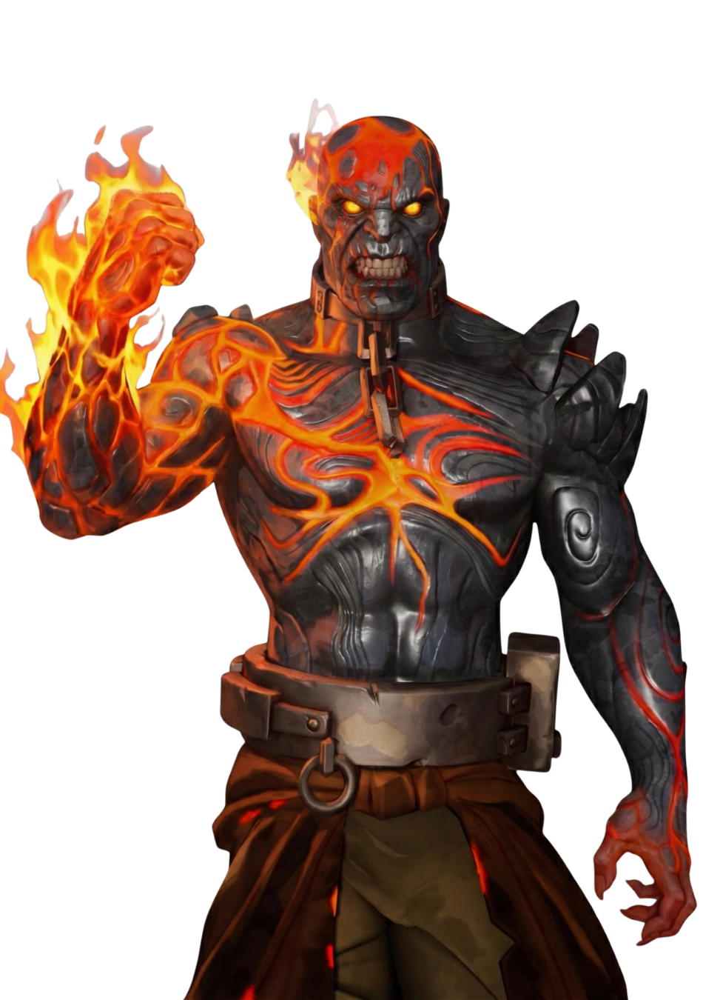
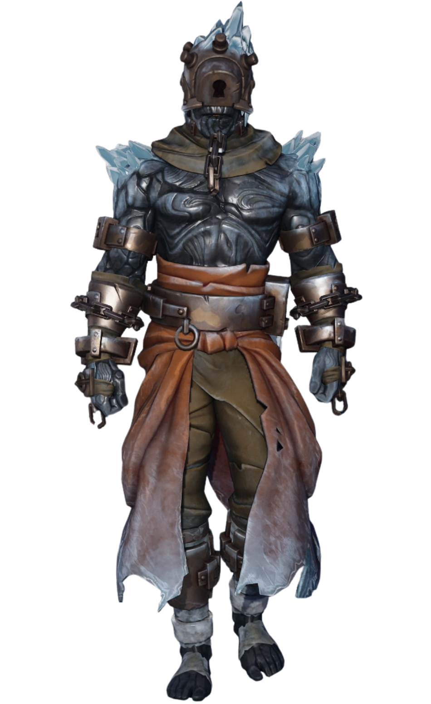
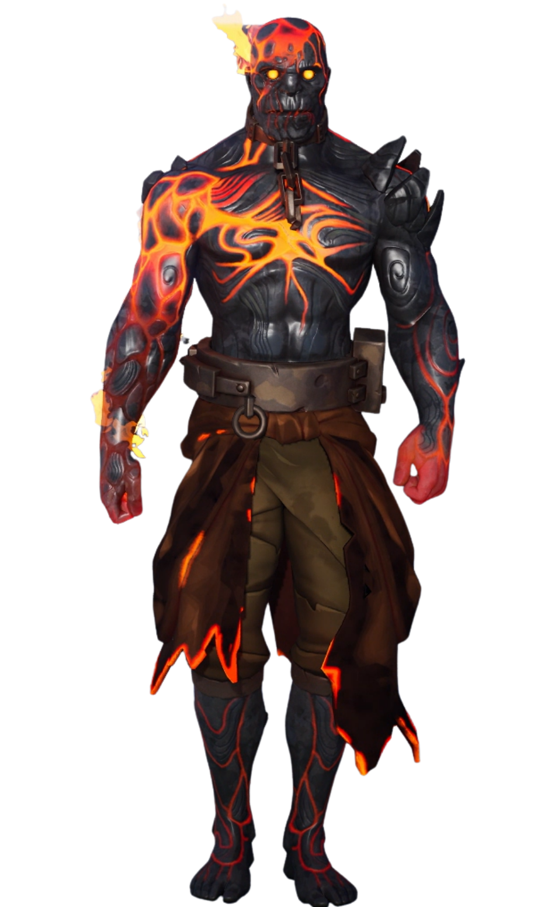

Le Maître du Feu
// Archives Biographiques
Le Prisonnier Oublié
Enfermé pendant des siècles dans les geôles glacées sous le château de Polar Peak, le Maître du Feu était le trophée ultime du Roi des Glaces. Entravé par des chaînes enchantées et maintenu en stase par le froid absolu, il a attendu son heure dans l'obscurité, nourrissant une haine incandescente envers son geôlier.
L'Éveil du Volcan
Libéré par la montée des températures sur l'île, il a déchaîné sa fureur en faisant jaillir un volcan gigantesque au cœur de Wailing Woods. Transformant la forêt paisible en un enfer de cendres et de lave, il a réduit Tilted Towers en ruines d'un simple rugissement, déclenchant une guerre élémentaire apocalyptique pour s'emparer du Point Zéro.
Consumé par la Rage
Dans son ultime affrontement, il parvint à détruire l'iceberg de son rival avec un météore de magma. Mais sa victoire fut son tombeau : en voulant canaliser trop de puissance pour écraser le Roi des Glaces, il perdit le contrôle de ses propres flammes. Dévoré de l'intérieur par une surchauffe incontrôlable, il bascula dans la cuve de son propre volcan, victime de son arrogance.
// Variantes Visuelles

